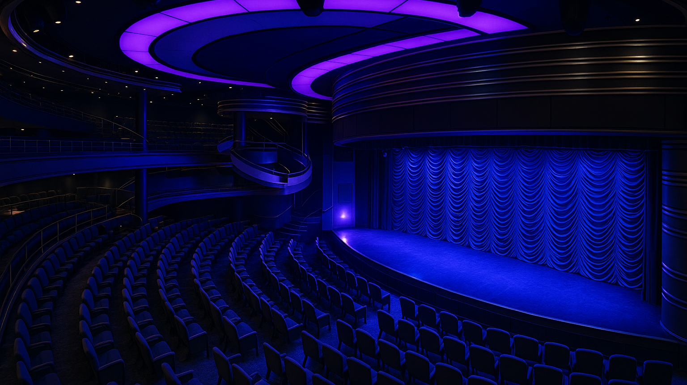

palcoscenici meccanici e macchinari teatrali per teatri e navi da crociera

La realizzazione, il montaggio e la manutenzione di palcoscenici meccanici e macchinari teatrali per teatri e navi da crociera richiedono competenze specializzate e precisione tecnica. Questi sistemi sono fondamentali per la gestione degli elementi scenografici, garantendo sicurezza e affidabilità durante ogni rappresentazione.
Il montaggio comporta il coordinamento di diversi componenti tecnici, con particolare attenzione agli standard di sicurezza. La manutenzione regolare, comprensiva di controlli, riparazioni e aggiornamenti, assicura la durata e l’efficienza degli impianti.
I macchinari per navi sono progettati per resistere al movimento delle imbarcazioni, utilizzando componenti robusti e flessibili. L’intero processo segue rigorosi standard industriali per garantire qualità e sicurezza in ambienti complessi come teatri e navi da crociera.